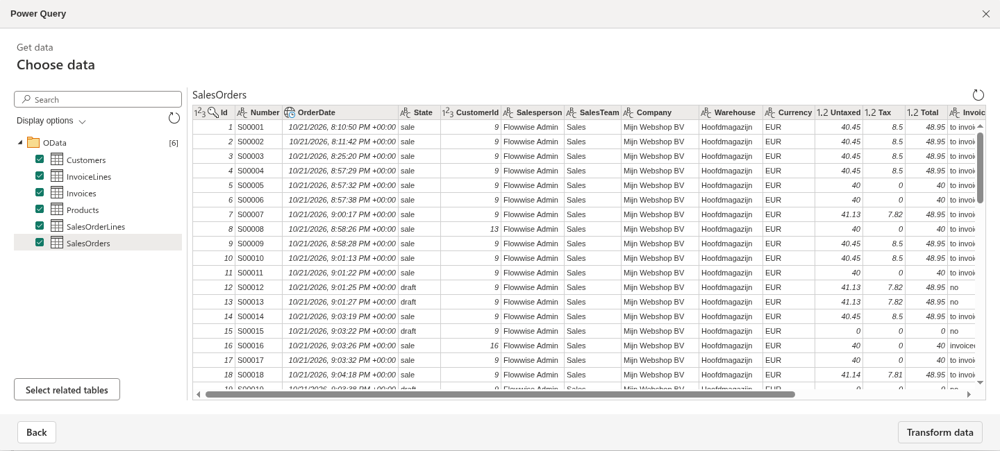
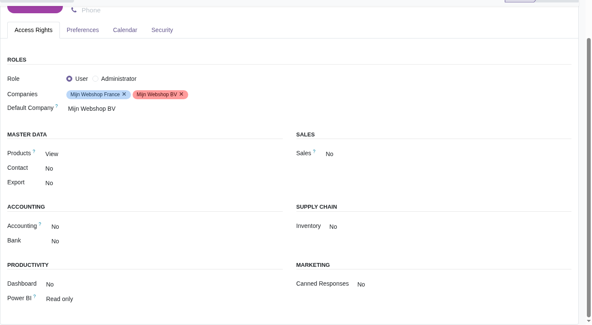
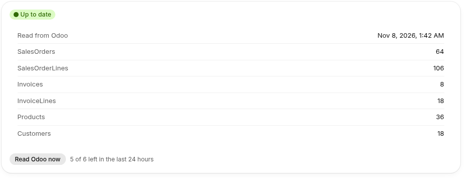

Flowwise reads your sales orders, invoices, products and customers from Odoo every 6 hours and serves them as an OData feed. Paste the feed address into Power BI, tick the tables you need and build your reports. This module gives Power BI its own Odoo user that can read and change nothing.

The tables link on their Id columns, so SalesOrderLines.OrderId points to SalesOrders.Id. Orders and invoices cover the last 24 months. Power BI sees typed columns: dates as dates, amounts as decimals.
This module adds a Power BI access right with one level, Read only. Give it to a separate Odoo user and connect that user's API key in Flowwise. The user reads sales orders, invoices, products, stock and customers, and Odoo refuses anything it tries to create, change or delete.

Flowwise reads Odoo every 6 hours. Set a scheduled refresh in Power BI and your reports show the latest read. Need it sooner? Click Read Odoo now in Flowwise, up to six times a day.

Read the full guide on flowwise.dev/koppelingen/odoo/power-bi.
Questions or stuck during setup? Email flowwise@newcraft.dev. Our team in the Netherlands answers in Dutch or English, on Dutch time (CET).
The module adds the Power BI access right and a Power BI menu item for administrators. It sends nothing by itself. Flowwise reads your Odoo data through Odoo's API, only after you connect Odoo in Flowwise with an API key. Delete the key in Odoo and Flowwise stops.